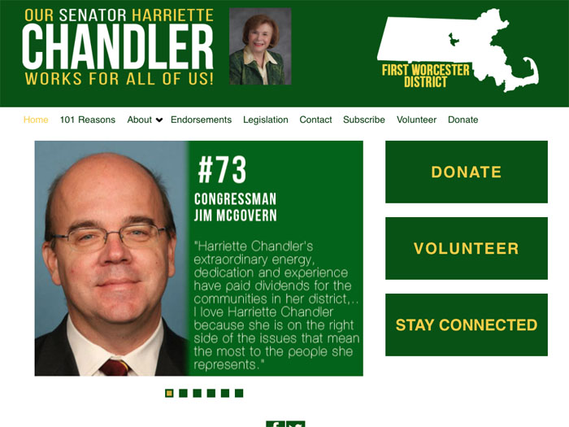

I'm a developer and designer based in Boston, MA.
Hey there. I'm Annabel.
Bonus Projects

Line Following Car
During the fall of 2015, I worked with two other Olin students to develop a small robot that followed a drawn out line using IR sensors. I focused primarily on the Arduino code and control algorithm for the robot. Here is a video and our github.
Harriette Chandler Campaign Website
During the spring and summer of 2014, I worked with Massachusetts State Senator Harriette Chandler to design her website for her election campaign. I created the site using basic HTML/CSS and RapidWeaver. She was elected in the fall of 2014.
Princeton Chemical Engineering Research
During the summer of 2015, I had the opportunity to conduct research at Princeton University in chemical engineering. I studied the properties of the surfactants and how they influence the clean up of deep-sea oil spills.
The Acessible Icon Project
During the spring of 2015, I had the opportunity to design an intermediate website for the Accessible Icon Project alongside Sara Hendren. The design was intended to foster communication and bring together the global Accessible Icon community. The website was redesigned in the Spring of 2016 to reflect the new mission of the project. I designed the website in Wordpress to allow for easy uploading of new posts for multiple members of the organization.
Simply Yoga with Lynn
I created the website during the summer of 2014 for a small yoga studio based in Grafton, MA. I created the site with basic HTML/CSS and RapidWeaver, and in the fall of 2015, the owner to carry on designing and creating the site on her own, so what I have shown you below were my initial designs.